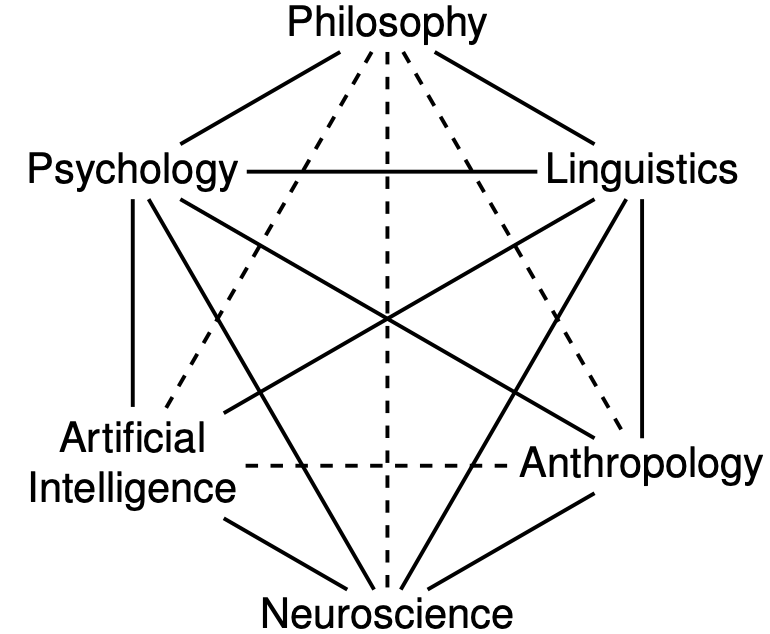
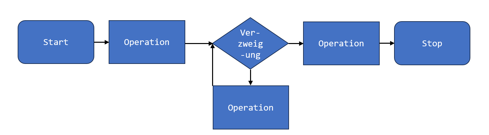
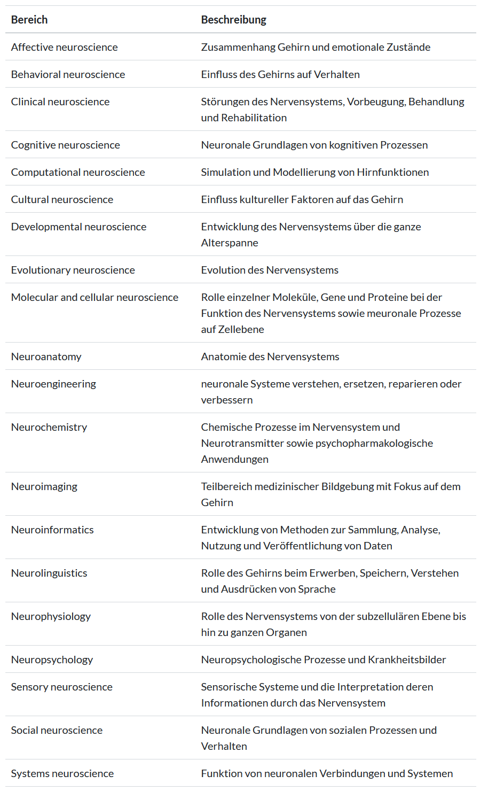

3 Neurowissenschaftliche Experimente
Nothing in neuroscience makes sense except in the light of behavior. Shepherd (1988)
3.1 Forschungsbereiche der Neurowissenschaften
In der Neurowissenschaft wird mit naturwissenschaftlichem Schwerpunkt der Aufbau und die Funktionen des Nervensystems untersucht. Neurowissenschaften sind ein sehr weites Forschungsbereich in dem unterschiedlichste und zahlreiche Themen bearbeitet werden. Die Forschungsbereiche reichen von Affektiven Neurowissenschaften, die den Zusammenhang von Gehirn und Emotionen untersuchen, über Neurochemistry, die sich u.a. mit Neurotransmittern und psychopharmakologischen Themen befasst, bis hin zu Neuroengineering, welches neuronale Systeme zu verstehen, ersetzen, reparieren oder verbessern versucht.1
So vielfältig, wie die Forschungsbereiche sind auch die experimentellen Ansätze und Methoden. Neurowissenschaftliche Forschung wird oft an Organismen und Tieren durchgeführt (z.B. Einzelzellableitungen in Affen). In diesem Kurs fokussieren wir uns auf neurowissenschaftliche Forschung am Menschen im Bereich der kognitiven Neurowissenschaft und Neuropsychologie. Das bedeutet, wir besprechen die Datenerhebung und -verarbeitung in verhaltenswissenschaftlichen Experimenten (teilweise auch im Zusammenhang mit bildgebenden Verfahren), welche Gehirnprozesse von Menschen untersuchen.
Kognitive Neurowissenschaften sind eng verknüpft mit Forschungsbereichen, wie beispielsweise der Psychologie, der Linguistik, künstlicher Intelligenz, Philosophie und Anthropologie:

3.2 Besondere Herausforderungen von Experimenten in den Verhaltenswissenschaften / kognitiven Neurowissenschaften
Das Erstellen und Durchführen neurowissenschaftlicher Experimente bringt viele Herausforderungen mit sich.
3.2.1 Passung: Experimentalparadigmen passend zur Fragestellung
Neurowissenschaftliche Experimente müssen exakt auf die Fragestellung zugeschnitten werden um aussagekräftige Daten zu liefern. Oft muss ein neues Paradigma erstellt werden, d.h. Forschende können kein schon bestehendes Experiment nutzen, sondern untersuchen einen Aspekt eines neuronalen Prozesses mit einer neuen Methode, einer neuen Fragestellung oder einem neuen Ansatz. Deshalb programmieren die meisten Forschenden ihre Experimentalparadigmen selbst. So können beispielsweise Instruktionen oder verwendete Stimuli, deren Grösse und Anzeigedauer präzise definiert werden. Dies erfordert breite Kenntnisse im Programmieren, der zu verwendenden Technik, wie auch der Gehirnprozesse.
3.2.2 Präzision: Hohe räumliche und zeitliche Auflösung
Eine grosse Schwierigkeit neurowissenschaftlicher Experimente ist oft, dass eine präzise Kontrolle von räumlichen und zeitliche Eigenschaften der Experimente nötig ist um sinnvolle Daten zu erhalten. Visuelle Stimuli müssen z.B. sehr genau und immer gleich präsentiert werden können. Die zeitliche Auflösung ist gerade bei EEG Experimenten von enormer Bedeutung, da EEG eine sehr hohe zeitliche Auflösung hat. Räumliche Auflösung kann bedeuten, dass sehr präzise visuelle Darbietung möglich sein muss, sowie dass die Versuchsperson sich im Setup nicht bewegen darf, weil dies die Distanzen verschiebt (z.B. im MRT, oder der Abstand zum Bildschirm beim Eyetracking).
3.2.3 Synchronisation: Mehrere Datenspuren
Neurowissenschaftliche Experimente beinhalten oft die Datenerhebung auf mehreren Ebenen, z.B. wird gleichzeitig Hirnaktivität und das Drücken von Antwortbuttons aufgenommen. Das bedeutet, dass Bildschirm, MRT/EEG/Eyetracking/etc., sowie die Antwort zeitlich koregistriert/synchronisiert werden müssen, um die Daten im Nachhinein auswerten zu können. Technisch ist das oft mit grossem Aufwand verbunden und benötigt einiges an Pilotierung.
3.2.4 Komplexität: Zu untersuchender Prozess und Störprozesse
Oft soll ein ganz spezifischer Prozess untersucht werden, aber das ist eine sehr komplexe Aufgabe, weil im menschlichen Gehirn gleichzeitig sehr viele verschiedene Prozesse ablaufen, kein Hirnareal hat nur eine einzige Aufgabe und aus ethischen Gründen ist das “Ausschalten” von Störfaktoren nicht immer möglich. Was kann man tun?
Ein Weg den Prozess sichtbar zu machen ist es zum Beispiel einen Kontrast zu rechnen, dies wird beispielsweise bei EEG und fMRI Experimenten, aber auch bei Reaktionszeitexperimenten sehr oft gemacht. Hierfür erhebt man Daten in einer Test-Bedingung in der der Prozess abgerufen wird und eine Kontroll-Bedingung, welche als “Baseline” dient. Die Baseline enthält alle “nicht interessierenden” Prozesse, die in der Test-Bedingung vorhanden sind. Durch das Vergleichen der Test- und Kontrollbedingung erhält man einen Kontrast: Also das was den interessierenden Prozess ausmacht!
Sie müssen sich beim Erstellen eines Experiments also nicht nur Gedanken dazu machen, was Sie interessiert - sondern genau so auch darüber was Sie nicht interessiert. In der Theorie tönt das einfach, in der Praxis ist das oft recht kniffelig.
3.2.5 Ressourcenintensive Datenerhebung: Teuer und anspruchsvoll
Bildgebende Verfahren, benötigen zum Teil extrem teure Geräte, wie z.B. fMRI, und bedeuten oft hohen Aufwand, z.B. das Kleben der Elektroden beim EEG. Bei der Untersuchung von ganz bestimmten Patientengruppen hat man zudem oft nicht sehr viele Personen zur Verfügung die den Einschlusskriterien entsprechen. Oft müssen Personen auch aus dem Experiment ausgeschlossen werden, weil sie z.B. Auffälligkeiten im MRI zeigen, die nichts mit dem zu untersuchenden Prozess zu tun hat oder sie brechen während der Untersuchung ab. Gerade bei der Untersuchung klinischer Aspekte stellen sich oft Schwierigkeiten, wie beispielsweise fehlende Motivation oder Compliance von Patient:innen. Daher können oft keine sehr grossen Stichproben erhoben werden, was im Gegenzug besonders präzise Experimente erfordert.
3.3 Wichtige Elemente von Experimenten
Beim Programmieren von Experimenten lohnt es sich, sich zuerst darüber im klaren zu sein, welche Bausteine das geplante Experiment hat. Im Folgenden werden einige typische Elemente eines Verhaltensexperiments beschrieben. Oft kommen hier natürlich noch Stimulations- oder Aufnahmemethoden hinzu.
3.3.1 Begrüssung und Einverständniserklärung
Hier wird die Versuchsperson begrüsst, wird über das Experiment aufgeklärt und gibt (wenn nicht vorher auf Papier schon geschehen) ihre Einverständnis zur Teilnahme am Experiment. Dies wird je nach Ethikkommission und Ethikantrag unterschiedlich gehandhabt. Wichtige Informationen sind hierbei, dass die Versuchsperson weiss worauf sie sich einlässt (Ist zum Beispiel Hirnstimulation/fMRI/etc. geplant? Wie lange dauert das Experiment ungefähr? Was soll sie tun, wenn sie abbrechen möchte?). Die Schwierigkeit ist oft, genügend Information zu geben aber die Hypothese nicht zu verraten.
3.3.2 Instruktion
Die Instruktion wird oft schriftlich gegeben, um diese zwischen den Versuchspersonen konstant zu halten. Es ist teilweise herausfordernd, einen Task so genau zu erklären, dass er verständlich ist, aber die Erklärung auch kurz genug zu halten, dass die Instruktion auch gelesen wird. Oft werden Übungstrials verwendet um die Instruktion zu verdeutlichen.
3.3.3 Stimuli
Unter Stimuli werden die gezeigten Elemente verstanden, die den Task ausmachen. Es können Töne, Bilder, Wörter, etc. als Stimuli verwendet werden.
Welche Stimuli aus neurowissenschaftlichen Experimenten kennen Sie?
Tauschen Sie sich mit Ihren Mitstudierenden aus und schreiben/zeichnen Sie ein paar Beispiele vorne an die Tafel.
[~5 Minuten]
3.3.4 Trial
Ein Trial beschreibt ein sich wiederholender Vorgang in dem der Stimulus gezeigt wird und z.B. von der Versuchsperson eine Antwort erwartet wird. Ein Trial wird oft sehr viele Male wiederholt. Die Stimuli können zwischen den Trials variieren oder gleich bleiben. Das Timing der Trials kann konstant sein (ein Stimulus wird bspw. immer gleich lang gezeigt) oder variiert werden (unterschiedliche Anzeigedauer).
Zwischen den Trials wird ein Inter-Trial-Interval (ITI) festgelegt. Dies wird z.B. bei fMRI Experimenten dann variiert, damit (je nach Repetition Time/TR) nicht immer in derselben Schicht aufgenommen wird bei Stimuluspräsentation.
Während einem Trial wird die Antwort / Response der Versuchsperson aufgenommen. Bei der Aufnahme von Reaktiosnzeiten muss festgelegt werden, wann der Trial oder die Stimuluspräsentation beginnt und mit welcher Handlung sie endet. Es kann bestimmt werden, welche Antworten zulässig sind (bspw. nur bestimmte Tasten) und was passiert wenn eine richtige oder falsche Antwort gegeben wird: Gibt es z.B. ein Feedback bei falschen Antworten?
3.3.5 Run / Block
Ein Run/ein Block bezeichnet eine Einheit mit mehreren Trials. Oft werden Bedingungen z.B. zwischen den Runs randomisiert. Zwischen den Runs sind Pausen möglich, damit sich die Versuchsperson erholen kann. Oft wird vor dem Experimentstart ein “Übungsblock” durchgeführt, um sich sicher zu sein, dass die Versuchspersonen die Aufgabe und Instruktion verstanden haben.
3.3.6 Debriefing und Verabschiedung
Im Debriefing wird der Versuchsperson erklärt, um was es im Experiment gegangen ist, welche Hypothesen untersucht wurden und eine eventuelle Coverstory aufgedeckt. Oft werden Personen vor dem Debriefing nach der getesteten Hypothese gefragt, um zu schauen, ob sie diese erraten hatten. Das gibt Aufschluss darüber wie sehr das Experiment dadurch verzerrt sein könnte, dass die Versuchspersonen Bescheid wissen. Wichtig ist es auch den Versuchspersonen zum Schluss zu danken.
3.4 Vorgehen Experiment programmieren
Wichtige Schritte beim Programmieren von Experimenten sind folgende (nicht unbedingt in dieser Reihenfolge, das kommt auf das Experiment an):
Task auswählen
Stimuli auswählen und generieren
Trial erstellen (Fixationskreuz? Stimulus? Antwortmöglichkeiten? Feedback? Masking?)
Timing festlegen: Dauer Stimuluspräsentation? ITIs (Inter-Trial-Intervals)? Antwortfenster?
Design: Anzahl Bedingungen und Trials bestimmen (Power bedenken), within oder between Design?
Ablauf des Experiments festlegen: Gesamtdauer? Pausen nötig?
Instruktion: klare Anweisungen, Coverstory
Einbindung von allen technischen Geräten (z.B. EEG Recorder, MRT, Brainstimulation-Devices, Eyetracking) und Synchronisation
3.4.1 Flowcharts
Flowcharts, auf Deutsch Flussdiagramme, eignen sich um Prozesse zu beschreiben. Beim Programmieren kann man damit gut darstellen, was ein Programm machen soll.

Bei der Planung und dem Erstellen eines Experiments ist es ebenfalls hilfreich eine Flowchart zu erstellen. In einer Experiment-Flowchart sind die Elemente eines Experimentes in Boxen eingezeichnet und mit Pfeilen verbunden um sie zeitlich einzuordnen. Timing-Informationen können unter oder neben den Boxen festgehalten werden. Die Anzahl Repetitionen wird oft neben den Pfeilen eingefügt. Hilfreich ist auch zu kennzeichnen, wo welche Daten erhoben werden (button presses, EEG, etc.).
Eine Flowchart eignet sich ebenfalls sehr gut, um in einem Paper/einer Arbeit darzustellen, wie der Ablauf des Experiments war.
Suchen Sie zusammen zu einem Thema Ihrer Wahl eine Flowchart.
- Identifizieren Sie alle Elemente des Experiments, die Sie finden.
- Gibt es Informationen zu den Stimuli?
- Gibt es Informationen zum Timing?
- Gibt es Informationen zur Datenerhebung?
- Fehlt etwas? Wie würden Sie dies ergänzen?
[~10 Minuten]
Forschungsbereiche der Neurowissenschaften: ↩︎